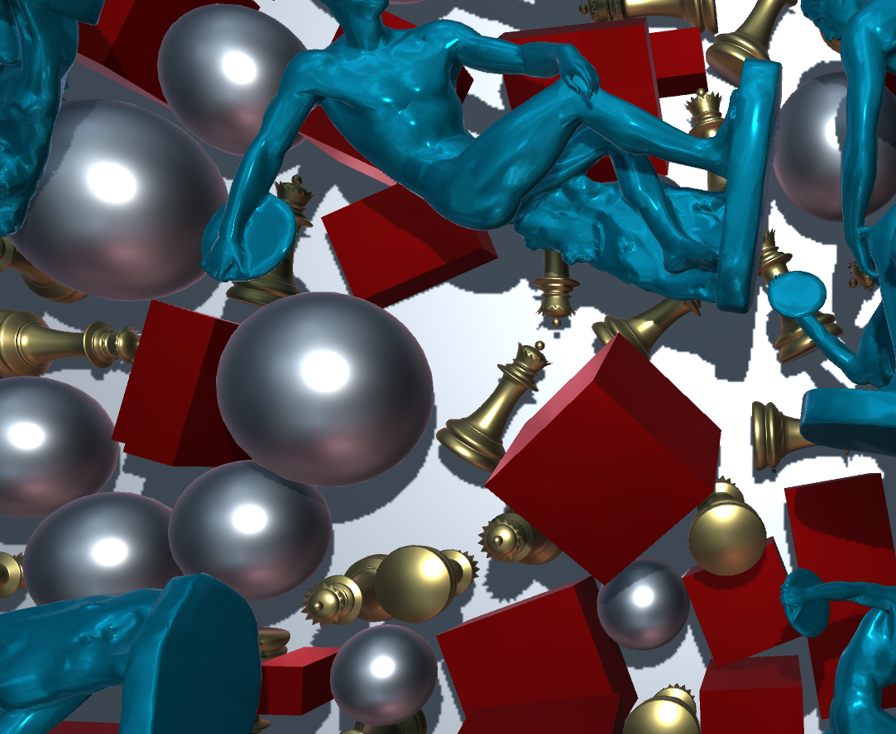

Pursuit (2022)
Waste Away (2022)

Choice & Consequence (2022)
Spring '22 allowed me to create a few projects for which I am particularly proud. As an Interactive Design student, this has been one of the most interesting yet, and I had to opportunity to stretch my creative muscles in ways I never had before. While I have experience with art, music, and design,
I'd never ventured into creating using technology as a primary medium.
This semester, I found myself utilizing video games and interactive experiences as a means of expression more profoundly than I had anticipated.
This short website contains some information about projects I worked on during this time.
Pursuit is a game of diversion and sacrifice. Escape your stalker for as long as possible by maneuvering around blockades, and collecting fuel for your torch. The brighter your torch burns, the slower your stalker's pursuit.
This hardcore infinite runner was developed using GameSalad for CIM204: Introduction to Game Design.
Avoid your own trail of trash in order to survive in Waste Away, a game about the detrimental effects of waste consumption.
This short impact game was developed using GameSald for CIM204: Introduction to Game Design.
Choices and their consequences lay at the core of playful interactive experiences. In that way, they mirror life.
To engage with Choice & Consequence, approach the terminal and activate four of the seven buttons before you. The user may then fall down the black hole beyond the terminal to witness the results of your actions.
Pursuit (2022)
Waste Away (2022)
Choice & Consequence (2022)